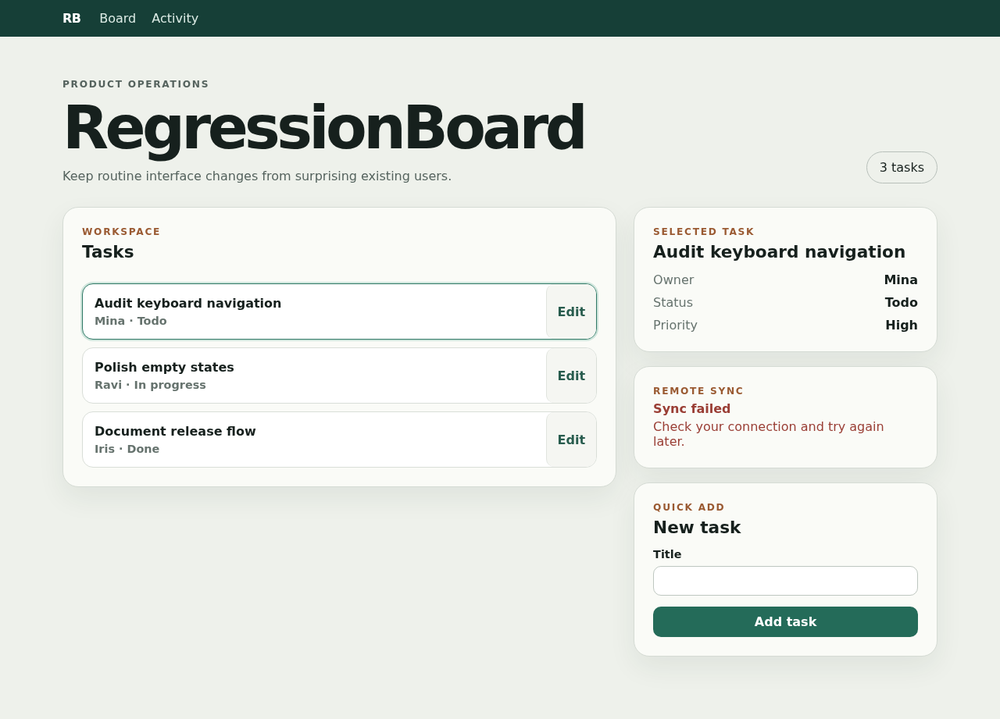
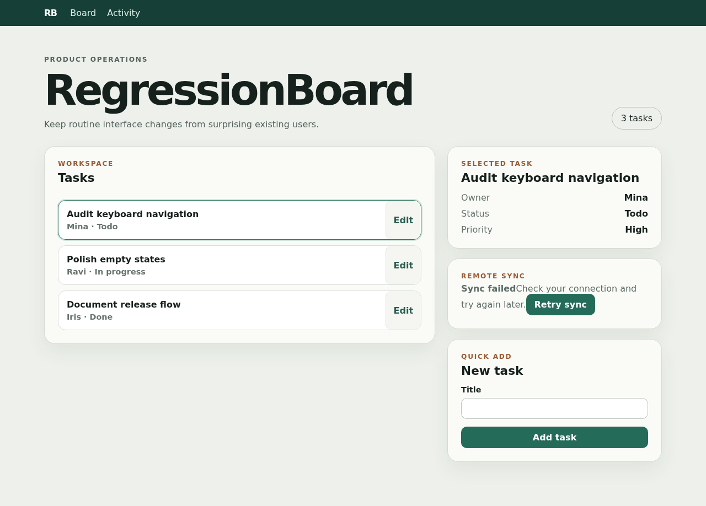
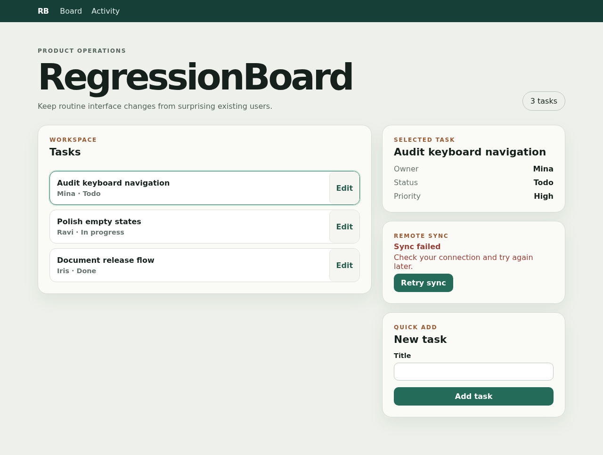

Stage 0 · 初始前端
基线
尚无恢复操作
/?sync=error 显示既有红色错误态，但没有 Retry sync 按钮。
t03-sync-retry__dev-qa-resilient__r1。页面和数据均从保存的 Git 初始提交、QA 实际收到的 Developer diff、最终工作区和 OpenCollab session 重建。

/?sync=error 显示既有红色错误态，但没有 Retry sync 按钮。

Developer 加入 retry 状态机和按钮；同时误删唯一的 .sync-state.error 规则。它在最终文字报告前因子预算停止，但非空 diff 被 artifact-first 交给 QA。
diff --git a/src/components/AsyncPanel.tsx b/src/components/AsyncPanel.tsx
index 708aa1a31bb0d2c886acbf86fc167b1f131b1aac..a13b44b916599b9fb246cb9c87a40739fece1278 100644
--- a/src/components/AsyncPanel.tsx
+++ b/src/components/AsyncPanel.tsx
@@ -4,14 +4,21 @@ type State = 'loading' | 'success' | 'error';
export function AsyncPanel() {
const [state, setState] = useState<State>('loading');
+ const [attempt, setAttempt] = useState(0);
useEffect(() => {
const timer = window.setTimeout(() => {
const requested = new URLSearchParams(window.location.search).get('sync');
- setState(requested === 'error' ? 'error' : 'success');
+ const failed = attempt === 0 && requested === 'error';
+ setState(failed ? 'error' : 'success');
}, 120);
return () => window.clearTimeout(timer);
- }, []);
+ }, [attempt]);
+
+ const retry = () => {
+ setState('loading');
+ setAttempt((current) => current + 1);
+ };
return (
<section className="card sync-card" aria-live="polite">
@@ -22,9 +29,11 @@ export function AsyncPanel() {
<div className="sync-state error" role="alert">
<strong>Sync failed</strong>
<span>Check your connection and try again later.</span>
+ <button type="button" className="sync-retry" onClick={retry}>
+ Retry sync
+ </button>
</div>
)}
</section>
);
}
-
diff --git a/src/styles.css b/src/styles.css
index 17928fd06abbf9ed36008b4d78ad257249d04540..bd182d9a5032fc5b9c09d10e86809e01efd2bcff 100644
--- a/src/styles.css
+++ b/src/styles.css
@@ -46,7 +46,6 @@ dl div { display: flex; justify-content: space-between; gap: 20px; }
dt { color: #66736e; } dd { margin: 0; font-weight: 700; }
.sync-state { margin: 0; color: #5d6b66; }
.sync-state.success { color: #1d6d4d; }
-.sync-state.error { display: grid; gap: 4px; color: #9a3e35; }
form, .modal { display: grid; gap: 14px; }
label { display: grid; gap: 7px; font-size: .9rem; font-weight: 700; }

Repair 恢复错误态的 grid、间距和红色，并为 retry 按钮增加局部布局。最终 build、6 个公开测试和 2 个隐藏测试全部通过。
--- a/src/styles.css
+++ b/src/styles.css
@@ -46,6 +46,8 @@
dt { color: #66736e; } dd { margin: 0; font-weight: 700; }
.sync-state { margin: 0; color: #5d6b66; }
.sync-state.success { color: #1d6d4d; }
+.sync-state.error { display: grid; gap: 4px; justify-items: start; color: #9a3e35; }
+.sync-retry { justify-self: start; margin-top: 2px; }
form, .modal { display: grid; gap: 14px; }
label { display: grid; gap: 7px; font-size: .9rem; font-weight: 700; }